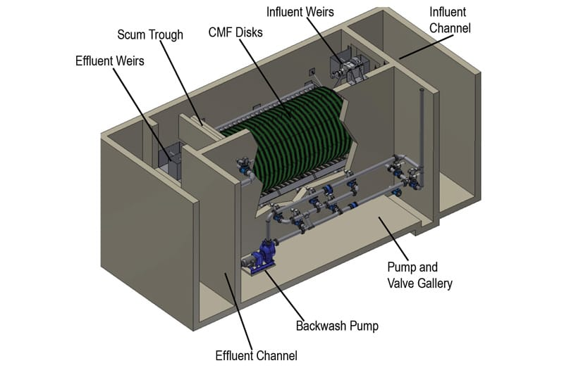

High-performance solution for stormwater and urban surface runoff treatment. Built on proven cloth media technology, AquaStorm™ removes TSS, turbidity, and particle-associated contaminants from rain events.

AquaStorm™ was developed specifically for the unique challenge of stormwater treatment: large flow variations, highly variable solids loads, and the need to operate autonomously. It uses the same cloth media technology proven in thousands of wastewater treatment installations worldwide.
The system is designed to handle the peak flow rates characteristic of intense rain events, maintaining efficiency in removing TSS, turbidity, total phosphorus, and particle-associated metals. Ideal for diffuse pollution control projects in urban, industrial, and agro-industrial areas.
Handles large flow variations typical of storm events without loss of efficiency.
Eliminates TSS, turbidity, total phosphorus, and heavy metals associated with particles in runoff.
Fully automated — operates without continuous supervision, ideal for urban infrastructure.
Stormwater runoff enters the system through the inlet channel and is evenly distributed across the submerged cloth media panels. Filtration occurs outside-in, retaining solids, sediment, and particle-associated contaminants on the outer surface of the media.
The system continuously monitors influent level. When the differential increases, automatic backwash activates, cleaning the media without interrupting flow. Collected sludge is removed by a dedicated pump for further treatment. During dry periods, the system enters standby mode and automatically restarts at the next storm event.
Stormwater enters the inlet channel and is distributed across the cloth media panels.
Solids retained on outer surface; clarified effluent collected internally.
Automatic level-triggered cleaning; standby between storm events.
Treatment of surface runoff from urban areas before discharge into water bodies
Removal of hydrocarbons, metals, and sediment from impervious surfaces
Diffuse pollution control at industrial facilities and logistics terminals
Reduction of solids and phosphorus loads from agricultural and rural areas
Sustainable drainage systems in new real estate developments
Protective barrier for sensitive rivers, lakes, and reservoirs
Our technical team analyzes your project and proposes an AquaStorm™ solution sized to your requirements.